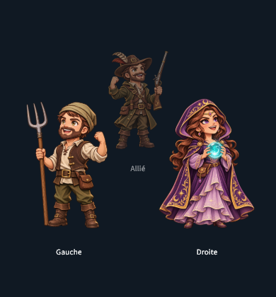

Mordeviel · Chibis de victoire
20 PNG individuels à fond transparent. Cliquez sur un personnage pour ouvrir son original. Les Deux Sœurs partagent un fichier.
Dans le jeu : survivants au premier plan, alliés éliminés derrière. Les personnages placés à gauche sont affichés en miroir vers la gauche, ceux de droite vers la droite. Le centre conserve son orientation. Pour les groupes nombreux, le bandeau se parcourt horizontalement.
Exemple du rendu dans le jeu
Deux survivants au premier plan, un allié éliminé derrière. Gauche et Droite sont des noms de démonstration.

Les personnages individuels